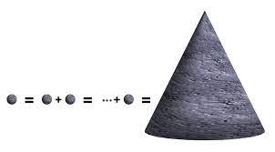
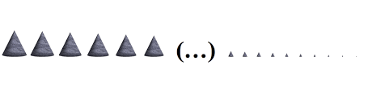

Survival Regression Models in PyMC
Time to Attrition in People Analytics
Agenda
- Time to Event Distributions
- HyperObjects and Perspectives on Probability
- People Analytics and Survival Regression
- Cox Proportional Hazard
- Accelerated Failure Time
- Comparing Model Implications
- Marginal Predictions
- Acceleration Factors
- Frailty Models and Stratified Risk
- Conclusion
The Pitch
Time to event data is everywhere. Understanding the temporal dynamics of event risk is crucial to management of organisational efficiency and costs.
The different flavours of complex hierarchical survival are all cleanly modelled as probabilities of state-transition within PyMC
Time to Event Distributions
Layered Abstractions and Hyperobjects

Concepts that defy easy panoptic survey prohibit easy action e.g. climate change and mathematical structures such as families of probability distributions
Perspectives on Probability
Top-Down and Abstract

\[ h(t) = \frac{f(t)}{S(t)} \\ H(t) = -ln(S(t))\]


Actuarial Tables and Survival Curves
Bottom-Up and Concrete

Calculation of these abstract quantities proceeds from a clear and concrete notion of the risk-set in time.
Actuarial Tables and Survival Curves
Bottom-Up and Concrete
def make_actuarial_table(actuarial_table):
### Actuarial lifetables are used to describe the nature
### of the risk over time derived from instantaneous hazard
actuarial_table["p_hat"] = (actuarial_table["failed"] /
actuarial_table["risk_set"])
actuarial_table["1-p_hat"] = 1 - actuarial_table["p_hat"]
### Estimate of Survival function
actuarial_table["S_hat"] = actuarial_table["1-p_hat"].cumprod()
actuarial_table["CH_hat"] = -np.log(actuarial_table["S_hat"])
### The Estimate of the CDF function
actuarial_table["F_hat"] = 1 - actuarial_table["S_hat"]
actuarial_table["V_hat"] = greenwood_variance(actuarial_table)
return actuarial_tablePeople Analytics and Survival Regression
Time to Attrition Data
 Question: What is the relationship between individual characteristics and their expected survival times?
Question: What is the relationship between individual characteristics and their expected survival times?

Question: How do individual survival times vary as a function of the levels in their covariates.
Regression and Censored Data
Censored Data Biases simple summaries
\[\mathbf{y_{i}} = \beta \mathbf{X_{i}} \]
\[\begin{split} \begin{pmatrix} \color{red}{y_{i, c}} \\ \color{blue}{y_{i, \neg c}} \\ \end{pmatrix} = \begin{pmatrix} \beta_{1} \\ \beta_{2} \\ \beta_{3} \end{pmatrix} \begin{pmatrix} \color{red}{x_{1,c}^{i}} & \color{red}{x_{2, c}^{i}} & \color{red}{x_{3, c}^{i}} \\ \color{blue}{x_{1,\neg c}^{i}} & \color{blue}{x_{2, \neg c}^{i}} & \color{blue}{x_{3, \neg c}^{i}} \\ \end{pmatrix} \end{split} \]
\[ \Rightarrow L(\mathbf{\beta}, S(\color{red}{y_{c}}), f(\color{blue}{y_{\neg c}}) ) \]
\[ \underbrace{p( \beta | y)}_{\text{posterior draws}} = \frac{p(\mathbb{\beta})L(\mathbf{\beta}, S(\color{red}{y_{c}}), f(\color{blue}{y_{\neg c}}) )}{\int_{i}^{n} L(\mathbf{\beta}_{i}, S(\color{red}{y_{c}}), f(\color{blue}{y_{\neg c}}) )p(\mathbf{\beta_{i}}) } \]
Regression for Survival Times
Distributions for Modelling Attrition

Monotonoc or non-monotonic hazards determined by distribution choice. Risk spikes important in early periods of employment.
Accelerated Failure Time Models
Parametric Models of Survival Distributions
\[S_{i}(t) = S_{0}\Bigg(\frac{t}{exp(\mu + \alpha_{1}x_{1} + \alpha_{2}x_{2} ... \alpha_{p}x_{p})} \Bigg) \]
with pm.Model(coords=coords, check_bounds=False) as aft_model:
X_data = pm.MutableData("X_data_obs", X)
beta = pm.Normal("beta", 0.0, 1, dims="preds")
mu = pm.Normal("mu", 0, 1)
s = pm.HalfNormal("s", 5.0)
eta = pm.Deterministic("eta", pm.math.dot(beta, X_data.T))
reg = pm.Deterministic("reg", pt.exp(-(mu + eta) / s))
y_obs = pm.Weibull("y_obs", beta=reg[~cens], alpha=s, observed=y[~cens])
y_cens = pm.Potential("y_cens", weibull_lccdf(y[cens], alpha=s, beta=reg[cens]))
idata = pm.sample_prior_predictive()
idata.extend(
pm.sample(target_accept=0.95, random_seed=100, idata_kwargs={"log_likelihood": True})
)
idata.extend(pm.sample_posterior_predictive(idata))Parametric Model Structure

Accelerated Failure time models incorporate the regression component as a weighted sum that enters the parametric probability model
For instance: \[ Weibull(\alpha, \beta) \\ = Weibull(\alpha, reg)\]
Proportional Hazards Cox Regression
Flexible Discrete Intervals Hazards
\[ \text{Baseline Hazard: } \lambda_{0}(t) \] \[ \lambda_{0}(t) \cdot exp(\beta_{1}X_{1} + \beta_{2}X_{2}... \beta_{k}X_{k}) \]
with pm.Model(coords=coords) as base_model:
X_data = pm.MutableData("X_data_obs", retention_df[preds], dims=("individuals", "preds"))
lambda0 = pm.Gamma("lambda0", 0.01, 0.01, dims="intervals")
beta = pm.Normal("beta", 0, sigma=1, dims="preds")
lambda_ = pm.Deterministic(
"lambda_",
pt.outer(pt.exp(pm.math.dot(beta, X_data.T)), lambda0),
dims=("individuals", "intervals"),
)
mu = pm.Deterministic("mu", exposure * lambda_,
dims=("individuals", "intervals"))
obs = pm.Poisson("obs", mu, observed=quit,
dims=("individuals", "intervals"))
idata = pm.sample(
target_accept=0.95, random_seed=100, idata_kwargs={"log_likelihood": True}
)
Proportional Hazards Cox Regression

“There’s the ‘mañana paradox’: the unwelcome task which needs to be done, but it’s always a matter of indifference whether it’s done today or tomorrow; the dieter’s paradox: I don’t care at all about the difference to my weight one chocolate will make.” - Dorothy Edgington
Proportional Hazards Cox Regression

Proportional Hazards Cox Regression
Using the Poisson Trick

\[ CoxPH(left, month) \sim gender + level \]
is akin to
\[ left \sim glm(gender + level + (1 | month)) \\ \text{ where link is } Poisson \]
applying an offset to the event rate for each time interval.
Proportional Hazards Cox Regression
The Proportional Hazards Assumption
- The covariates enter once into the weighted sum that modifies the baseline hazard.
- While the baseline hazard can change over time the difference in hazard induced by different levels in the covariates remains constant over time.
\[ \forall t \in T: \frac{h(t | X_{gender} = 1)}{h(t | X_{gender} = 0)} = constant \]
Comparing Model Implications
Comparing Models
Stated Intention and Sentiment
\[ CoxPH(left, month) \sim gender + field + level + sentiment \]
\[ CoxPH(left, month) \sim gender + field + level + sentiment + intention \]

Comparing Models
Interpreting Model Coefficients
- If \(exp(\beta)\) > 1: An increase in X is associated with an increased hazard (risk) of the event occurring.
- If \(exp(\beta)\) < 1: An increase in X is associated with a decreased hazard (lower risk) of the event occurring.
- If \(exp(\beta)\) = 1: X has no effect on the hazard rate.
Predicting Marginal Effects 
Comparing Models
Predicting Marginal Effects


Comparing Models

Comparing Models
Marginal Survival Functions and WAIC


Frailty Models and Stratified Risks
Frailty Models and Individual Heterogeneity
We want to relax the assumptions of Cox Proportional Hazards model. We introduce (i) frailty terms and (ii) stratified risks
\[ \lambda_{i}(t) = \color{green}{z_{i}}exp(\beta X)\color{red}{\lambda_{0}^{g}(t)} \]
The multiplicative frailty terms \(z_{i}\) can be specified as a gamma distribution centred on unity with stratified risks

Frailty Model in Codes
with pm.Model(coords=coords) as frailty_model:
X_data_m = pm.MutableData("X_data_m", df_m[preds], dims=("men", "preds"))
X_data_f = pm.MutableData("X_data_f", df_f[preds], dims=("women", "preds"))
lambda0 = pm.Gamma("lambda0", 0.01, 0.01, dims=("intervals", "gender"))
sigma_frailty = pm.Normal("sigma_frailty", opt_params["alpha"], 1)
mu_frailty = pm.Normal("mu_frailty", opt_params["beta"], 1)
frailty = pm.Gamma("frailty", mu_frailty, sigma_frailty, dims="frailty_id")
beta = pm.Normal("beta", 0, sigma=1, dims="preds")
## Stratified baseline hazards
lambda_m = pm.Deterministic(
"lambda_m",
pt.outer(pt.exp(pm.math.dot(beta, X_data_m.T)), lambda0[:, 0]),
dims=("men", "intervals"),
)
lambda_f = pm.Deterministic(
"lambda_f",
pt.outer(pt.exp(pm.math.dot(beta, X_data_f.T)), lambda0[:, 1]),
dims=("women", "intervals"),
)
lambda_ = pm.Deterministic(
"lambda_",
frailty[frailty_idx, None] * pt.concatenate([lambda_f, lambda_m], axis=0),
dims=("obs", "intervals"),
)
mu = pm.Deterministic("mu", exposure * lambda_, dims=("obs", "intervals"))
obs = pm.Poisson("outcome", mu, observed=quit, dims=("obs", "intervals"))
frailty_idata = pm.sample_prior_predictive()
frailty_idata.extend(pm.sample(random_seed=101))Frailty Model Structure
Individual Frailties

Frailty Model Structure
Shared Frailties


Frailty Models and Stratified Baseline Risks

We see differences in the risks stratified by gender and additionally how the magnitude of the baseline hazard shrinks with more or less well-specified covariate in the model.
Individual Frailties and Marginal Statistics

Conclusion
- Survival Analysis is a tool for the expression of probabilities governing state-transitions
- Important everywhere process efficiency and transformative outcomes matter. Corrects for censorship bias of naive summaries.
- Allows for sophisticated expression of risk over time and along many dimensions. Variety of hierarchical modelling options
- Bayesian estimation of these complex model structures is natural and informative. Meaningful across a range of disciplines and domains.
- Provides an actionable lens on “actuarial” risk and “diagnostic” causal analysis in time.

